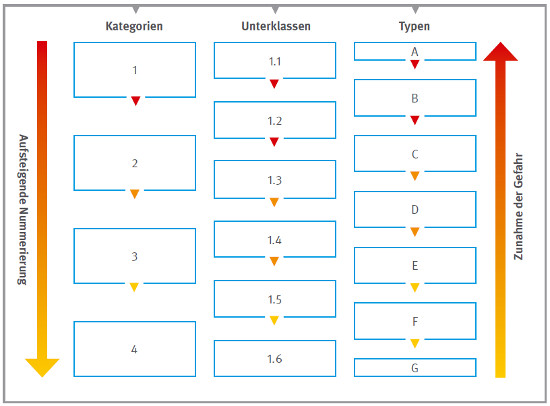
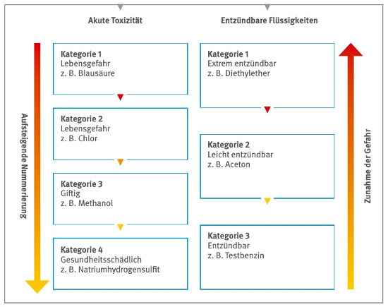

Stoffe werden als gefährlich eingestuft, wenn ihnen aufgrund ihrer Eigenschaften mindestens eine Gefahrenklasse zugeordnet werden kann. Die bisherigen Gefährlichkeitsmerkmale werden durch Gefahrenklassen ersetzt und unterschieden in:
Die CLP-Verordnung sieht 28 Gefahrenklassen vor und ist damit wesentlich differenzierter als die Einstufung anhand der bisherigen 15 Gefährlichkeitsmerkmale. Eine Gegenüberstellung der Anzahl der Gefährlichkeitsmerkmale nach der Stoffrichtlinie und der Gefahrenklassen nach CLP-Verordnung zeigt Tabelle 1.
| Gefahren | Stoffrichtlinie Gefährlichkeitsmerkmale Anzahl |
CLP-Verordnung Gefahrenklassen Anzahl |
| Physikalisch-chemische | 5 | 16 |
| Gesundheit | 9 | 10 |
| Umwelt | 1 | 2 |
Tabelle 1 Gegenüberstellung Gefährlichkeitsmerkmale nach Stoffrichtlinie und Gefahrenklassen nach CLP-Verordnung
Bei den bisherigen Gefährlichkeitsmerkmalen war in der Regel die Schwere der Gefahr unmittelbar erkennbar (z. B. „sehr giftig“, „giftig“ und „gesundheitsschädlich“). Die einzelnen Gefahrenklassen dagegen geben „nur“ die jeweilige Wirkung an. Abhängig von der Schwere der Gefahr werden die Gefahrenklassen in bis zu vier Kategorien bzw. sechs Unterklassen oder sieben Typen untergliedert. Mit steigender Nummerierung bzw. mit fortlaufendem Buchstaben im Alphabet nimmt die Gefahr ab (siehe Abbildung 1).

Abb. 1 Zusammenhang zwischen Nummerierung und Gefahr
Die Gefährlichkeitsmerkmale „sehr giftig“, „giftig“ und „gesundheitsschädlich“ werden nach CLP-Verordnung beispielsweise in die Gefahrenklasse „Akute Toxizität“ überführt und darin in vier Kategorien unterteilt.
Bei den Gefährlichkeitsmerkmalen „hochentzündlich“, „leichtentzündlich“ und „entzündlich“ erfolgt die Zuordnung nach CLP-Verordnung je nach Aggregatzustand und Erscheinungsform der Stoffe (fest, flüssig, gasförmig, Aerosol) sowie der genauen Wirkung in eigene Gefahrenklassen. Diese werden wiederum in bis zu drei Kategorien unterteilt.
Dieser Zusammenhang wird in Abbildung 2 verdeutlicht.

Abb. 2 Zusammenhang zwischen Nummerierung und Gefahr
In den Tabellen 2 bis 4 sind die Gefahrenklassen mit ihren Bezeichnungen sowie ihren Unterklassen, Kategorien bzw. Typen zusammengestellt.
| lfd. Nummer | Bezeichnung der Gefahrenklasse | Unterklassen/Kategorien/Typen |
| 1 | Explosive Stoffe/Gemische und Erzeugnisse mit Explosivstoff | Instabil explosiv und Unterklasse 1.1 bis 1.6 |
| 2 | Entzündbare Gase (einschließlich chemisch instabile Gase) | Kategorien 1 und 2 (Kategorien A und B) |
| 3 | Aerosole | Kategorien 1 bis 3 |
| 4 | Oxidierende Gase | Kategorie 1 |
| 5 | Gase unter Druck | Kategorie 1 |
| 6 | Entzündbare Flüssigkeiten | Kategorien 1 bis 3 |
| 7 | Entzündbare Feststoffe | Kategorien 1 und 2 |
| 8 | Selbstzersetzliche Stoffe und Gemische | Typen A bis G |
| 9 | Pyrophore Flüssigkeiten | Kategorie 1 |
| 10 | Pyrophore Feststoffe | Kategorie 1 |
| 11 | Selbsterhitzungsfähige Stoffe und Gemische | Kategorien 1 und 2 |
| 12 | Stoffe und Gemische, die in Berührung mit Wasser entzündbare Gase abgeben | Kategorien 1 bis 3 |
| 13 | Oxidierende Flüssigkeiten | Kategorien 1 bis 3 |
| 14 | Oxidierende Feststoffe | Kategorien 1 bis 3 |
| 15 | Organische Peroxide | Typen A bis G |
| 16 | Korrosiv gegenüber Metallen | Kategorie 1 |
Tabelle 2 Gefahrenklassen für die physikalisch-chemischen Gefahren mit Unterklassen, Kategorien bzw. Typen
| Gefahrenklasse | Bezeichnung der Gefahrenklasse | Kategorien |
| 1 | Akute Toxizität | Kategorien 1 bis 4 |
| 2 | Ätz-/Reizwirkung auf die Haut | Kategorien 1 und 2 |
| 3 | Schwere Augenschädigung/Augenreizung | Kategorien 1 und 2 |
| 4 | Sensibilisierung der Atemwege/Haut | Kategorie 1, 1A, 1B Atemwege, Kategorie 1, 1A, 1B Haut |
| 5 | Keimzellmutagenität | Kategorien 1A, 1B, 2 |
| 6 | Karzinogenität | Kategorie 1A, 1B, 2 |
| 7 | Reproduktionstoxizität | Kategorie 1A, 1B, 2; Wirkungen auf/über Laktation |
| 8 | Spezifische Zielorgan-Toxizität (einmalige Exposition) |
Kategorien 1 bis 3 |
| 9 | Spezifische Zielorgan-Toxizität (wiederholte Exposition) |
Kategorien 1 und 2 |
| 10 | Aspirationsgefahr | Kategorie 1 |
Tabelle 3 Gefahrenklassen für die Gesundheitsgefahren mit Kategorien
| lfd. Nummer | Bezeichnung der Gefahrenklasse | Kategorien | |
| 1 | Gewässergefährdend | akut langfristig |
Kategorie 1 Kategorien 1 bis 4 |
| 2 | Die Ozonschicht schädigend | Kategorie 1 | |
Tabelle 4 Gefahrenklassen für die Umweltgefahren mit Kategorien
Neu gegenüber den alten Gefährlichkeitsmerkmalen sind u. a. eigene Gefahrenklassen für:
Detaillierte Angaben zu den Einstufungskriterien werden im Anhang I der CLP-Verordnung beschrieben.